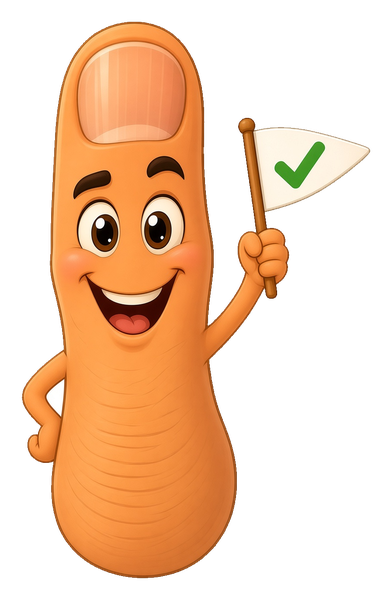

What Git actually does, shown with a working time machine.

Git has a scary reputation. Under the costume it is one simple idea: save your project the way a video game saves your progress. Snapshots, on a timeline, that you can always go back to.
You already use Git
You updated a website by uploading a file
Uploading a file on a code hosting site quietly makes a commit for you. You have been committing all along, through a friendlier door.
tap
A site that rebuilds itself after you upload
Free static hosts watch the repository. Every new commit triggers a rebuild. The commit is the publish button.
tap
AI coding tools
Coding assistants run git constantly: saving checkpoints, branching experiments, undoing mistakes. Read the commands and you can read over their shoulder.
tap
part 1 · the problem git solves
Which file is the real one?
Before version control, keeping history meant making copies. You have seen this folder. You may own this folder. Tap the files.
final.html
Made in March. Definitely not final.
final_v2.html
Better. For a week.
final_FINAL.html
The caps mean it is serious.
final_REAL(2).html
A copy of a copy. Of something.
final_v2_REAL_final.html
At this point the file name is a diary.
final OLD DO NOT USE.html
Narrator: someone used it.
c1first working pageMar 3
c2add photo galleryMar 9
c3fix menu on phonesApr 2
c4new spring colorsApr 18
Same history. One file name. Every version kept, labeled, dated, and ordered, with a note about why it changed. That is a repository: your folder plus its entire past.
part 2 · the mental model
The three rooms
Every Git command makes sense once you can see the three places a change can live.
Workbench
the folder you actually see and edit
empty
Tray
changes you chose for the next save (git calls it the staging area)
empty
Vault
every snapshot ever saved (the history)
empty
Tap Follow one file to watch a single file travel through all three rooms.
part 3 · hands on
Drive the time machine
A real sandbox. The commands are real, the little project folder is real, and the map below redraws from the actual repository state. Nothing is faked, and nothing can break.
Missions
boss level · optional
Survive a merge conflict. Make a branch, edit home.html and commit on both branches, then merge. Git will stop and ask you to decide. edit the file, git add it, git commit. Most people fear this moment. You will have already beaten it in a sandbox.
The Gym: reps until it sticks
Small real repo situations with randomized names, checked live against the actual repository state. Every drill resets the sandbox repo. Hints cost nothing but pride; skipping resets your streak.
practice
The Trail: your actual git history, shipping games to the shelf, branching a redesign, the merge conflict on the version badge.
reps0streak0best0
Pick a level (or Surprise me) and tap Start drill. The terminal below is your workbench.
you@laptop:project$
The map
Your commit timeline, drawn live from the sandbox. Orange lane is main, teal lanes are branches.
run git init to build the vault
Workbench
empty
Tray
empty
Vault
empty
part 4 · branches
Parallel timelines, one sticker at a time
A branch is not a copy of your project. It is a label. A sticky note pointing at one commit. New saves move the note forward.
That is why branches are cheap and instant. Making one writes a tiny text file. You are not duplicating anything. You are planting a flag, trying an idea, and merging it back if it works.
tap play to watch a project branch and merge
A scripted project will run through the same real engine as your sandbox above: two commits, a branch, work on both timelines, then a merge.
part 5 · git vs github
The tool and the town square
Git runs entirely on your machine. No account, no internet. GitHub is a website that keeps a copy of your repository and adds sharing on top. Different things, constantly confused.
git push
Uploads your new commits to the cloud copy. Push only sends snapshots the cloud has not seen yet, which is why it is fast.
tap
git clone and git pull
Clone copies the whole vault, history and all, to any machine. Pull grabs just the commits you are missing.
tap
Free hosting reads your commits
Static site hosting serves files straight from the repository. Newest commit on the main branch = the live site. The commit is the deploy.
tap
The upload button is a costume
Editing or uploading a file on the website makes a real commit underneath, message and all. The web page is just a friendly face on git commit.
tap
Try a push
This uses your actual sandbox repository from part 3. Commit something up there, then push it here.
GitHub has never seen this project.
the cloud copy is empty
Push sends your snapshots to the cloud. Nothing more mysterious than that.
part 6 · the honest verdict
What to keep, what to skip
Keep this
The loop: change, git add, git commit -m. Run git status before anything, it is always safe and never changes a thing. A branch is a movable label; merge brings labels back together. Push sends snapshots to the cloud copy. That is 90 percent of daily Git.
Skip for now
rebase, stash, cherry-pick, submodules, detached HEAD. All real, none required. Learn each one the day you actually need it, not before.
Pocket reference
git initstart tracking this foldergit statuswhat changed? always safegit add .put every change in the traygit commit -m "msg"seal the tray into a snapshotgit logread the timelinegit branch NAMEplant a new label heregit switch NAMEmove to that labelgit merge NAMEpull that timeline into this onegit pushsend new snapshots to the cloud